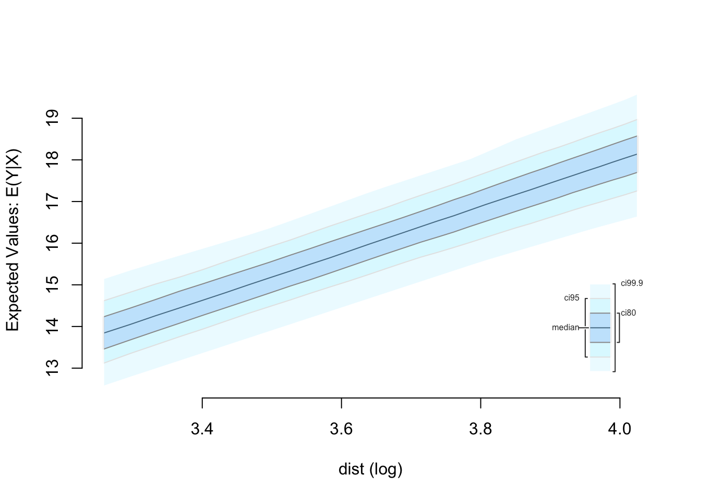
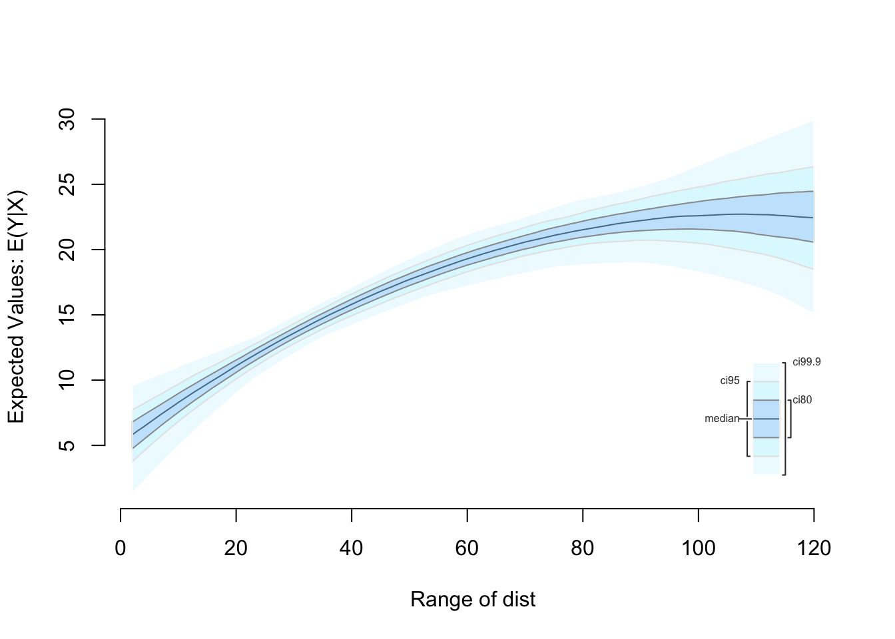
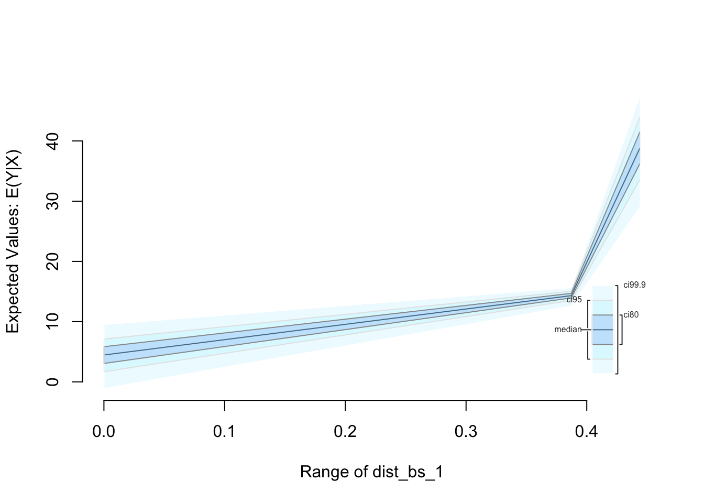

Built using Zelig version 5.1.0.90000
For convenience, you may wish to transform one or more of your covariates within the zelig model estimation call. For example, imagine we want to natural log transform the variable dist in a linear regression:
library(zeligverse)
library(dplyr)
z.log <- zelig(speed ~ log(dist), data = cars, model = 'ls', cite = FALSE)Then we want to find quantities of interest when the dist variable is 26 to 56 (the first to third quartile). To do this we added the logged fitted values to setx, simulate quantities of interest, and plot the results:

We could also estimate the model with dist as a polynomial. For example:
# Find range of polynomial values
dist_range <- min(cars$dist):max(cars$dist)
zelig(speed ~ dist + I(dist^2), data = cars, model = 'ls',
cite = FALSE) %>%
setx(dist = dist_range) %>%
sim() %>%
plot()
The ability to transform covariates with splines in the zelig model formula and then set/simulate quantities of interest is currently in development. In the meantime. You can transform the covariates outside of the zelig model estimation call. For example, we can include splines for dist in the following way:
library(splines)
cars.splines <- cbind(cars, bs(cars$dist))
names(cars.splines)[3:5] <- c('dist_bs_1', 'dist_bs_2', 'dist_bs_3')
zelig(speed ~ dist_bs_1 + dist_bs_2 + dist_bs_3, data = cars.splines,
model = 'ls', cite = FALSE) %>%
setx(dist_bs_1 = c(min(cars.splines$dist_bs_1), median(cars.splines$dist_bs_1),
max(cars.splines$dist_bs_2)),
dist_bs_2 = c(min(cars.splines$dist_bs_2), median(cars.splines$dist_bs_2),
max(cars.splines$dist_bs_2)),
dist_bs_3 = c(min(cars.splines$dist_bs_3), median(cars.splines$dist_bs_3),
max(cars.splines$dist_bs_3))) %>%
sim() %>%
plot()
Note that this example was for syntax illustration purposes only. You probably want to use a more continuous range of values for the splines. Make sure that you have an equal number of fitted values for each component of the spline and that these are all in the same order.